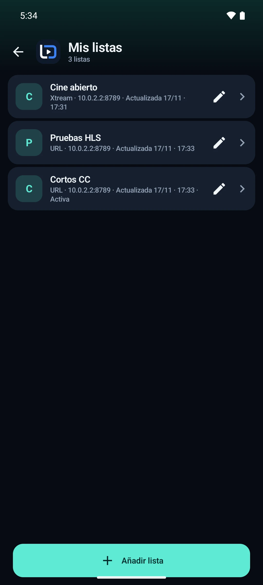
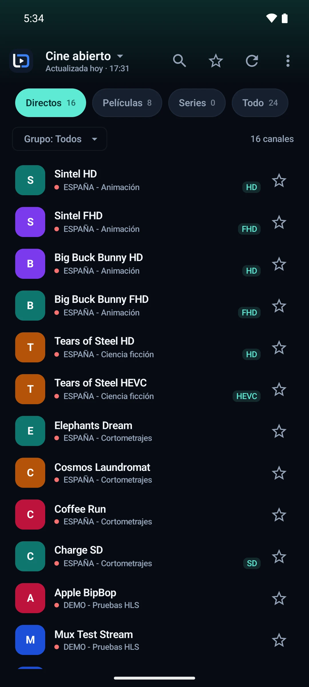
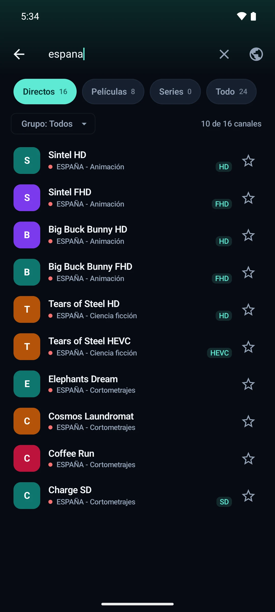
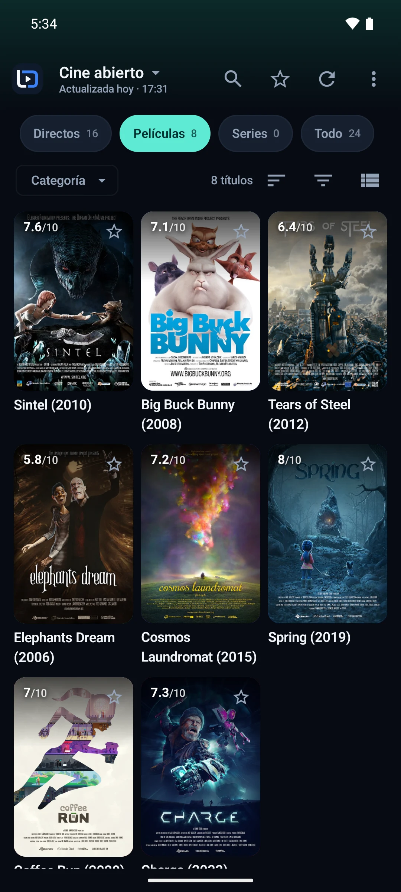
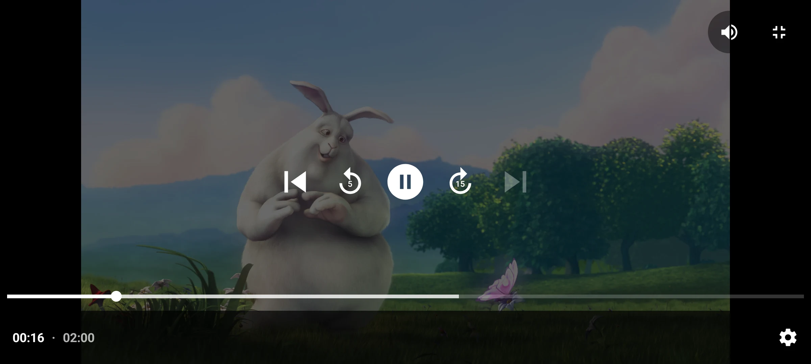

01
Your lists, with names
Add one or more lists (M3U/M3U8 URL or Xtream server), name them and switch between them. Credentials are masked on screen and everything is stored only on your phone.

Android · Open source · GPL-3.0
Open IPTV plays your M3U or Xtream list and does nothing else. It doesn't try to be the best on the market, just a simple app that stays out of your way. If it doesn't convince you, don't use it; if it lacks something, the code is yours to extend.

01
Add one or more lists (M3U/M3U8 URL or Xtream server), name them and switch between them. Credentials are masked on screen and everything is stored only on your phone.

02
Live, Movies and Series tabs, group filter and a search that ignores accents and case: type “espana” and it finds “ESPAÑA”. Tested with lists of tens of thousands of entries.

03
With an Xtream server, movies and series appear in a poster grid, and series open by season and episode. With a plain M3U you get the list as it is.


Landscape, with the usual controls: pause, −5 s, +15 s and mute. Rotating the phone doesn't interrupt playback.
“Subscription expired”, “server not found”, “unsupported format”… never an “unknown error”.
It keeps the last list that worked. If a refresh fails, you keep the previous one.
Favourites per category and a button that mutes only the app, without touching your phone's volume. Nothing more.
There are plenty of IPTV apps, some of them very complete. This one is deliberately small: it plays lists, has no ads, asks for no account and sends nothing anywhere.
No problem. Uninstall it and use another. There's no account to close and no data to recover.
It's Kotlin and Jetpack Compose, no exotic frameworks. Clone the repository, add what you miss and, if you want, send a pull request.
No programme guide (EPG), recording, Chromecast or Android TV. Maybe someday; maybe you'll add it first.
Free, no sign-up. It isn't on Google Play: you install it from an APK file, which needs an Android permission explained below. New versions install over the old one without losing your lists.
Open this page on your phone and tap Download APK. Chrome may warn that “this type of file can harm your device”: that's the generic warning for any APK; tap Download anyway.
When you open the file, Android will say your phone can't install apps from this source. Tap Settings and turn on Allow from this source for the browser (or file manager) you're opening it with. It's a per-app permission, and you can revoke it afterwards.
On Android 7 it's a global setting: Settings → Security → Unknown sources. Names vary by manufacturer.
Go back and tap Install. If Google Play Protect warns that the app is unknown, that's because it isn't in the store: choose More details → Install anyway.
Open the app, add your provider's M3U URL or Xtream details and you're done. It ships empty on purpose.
Each release publishes the APK's SHA-256 in its notes. Compare it with:
sha256sum open-iptv.apkOr build the app yourself from the source code.
Open IPTV is just a player, and doesn't try to be more. It includes no channels, lists or providers, and won't help you find them. You need a list you have the right to use. It isn't affiliated with any provider or channel.
The app collects no data. It only connects to the addresses you give it: your list, the channels and their logos. Your lists and favourites are stored on your phone and nowhere else. This website uses no cookies or analytics.
Author
Senior Software Engineer · AI-powered development
I've spent twenty years building backend software and now I combine it with AI agents and models. Open IPTV is a personal project: I almost called it “Yet another IPTV app”, and that's the spirit. I wanted a player with no accounts or ads that explains what went wrong when something fails.